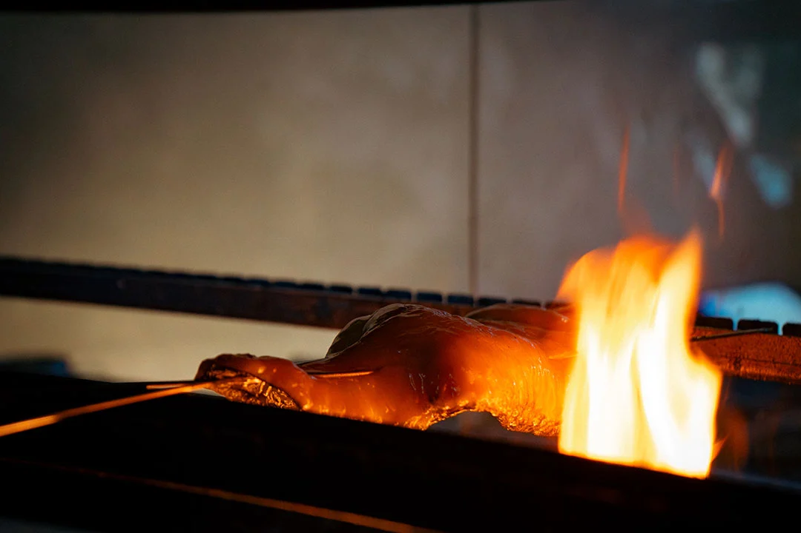

Il prossimo eventoSake & Robata Pairing
La brace incontra il sake in una cena pensata come un dialogo: a ogni portata, un calice che ne accompagna profumi, consistenze e intensità.
Si comincia con un assaggio dal Sushi Bar, si prosegue con pesce e verdure alla Robata e si chiude con la delicatezza del sesamo nero. Tre sake selezionati raccontano altrettanti modi di vivere la tavola giapponese.
- Il percorso
- 5 portate · 3 sake in abbinamento
- Per persona
- €95 · abbinamento incluso